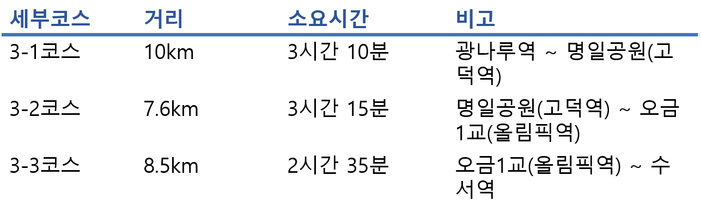
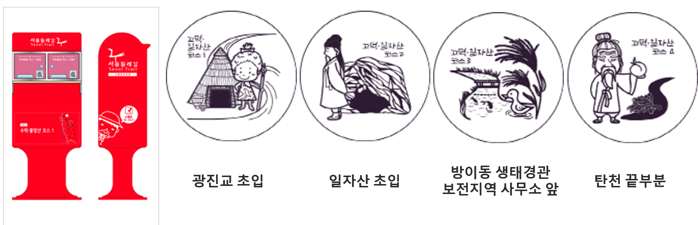

3코스-고덕·일자산코스
3코스-고덕·일자산코스 강동구,송파구 26.1㎞ 9시간 초급
세부코스정보
고덕·일자산코스는 광나루역에서 출발해 한강, 고덕산, 일자산, 성내천, 문정근린공원, 탄천을 경유해 수서역에 도착하는 코스이다. 본 코스는 강길, 숲길, 하천길이 모두 포함되어 서울시의 자연경관을 보고 느낄 수 있는 최적의 코스이다. 또한 숲길은 높지 않은 고도로 수월한 산행이 가능하며, 주변의 역사문화관광지가 다양하게 분포하고 있어 볼거리 또한 풍부하다. 코스가 긴 편으로 소요시간이 다소 걸리지만 비교적 평탄한 지형으로 트레킹을 하기에 무리가 없다.

교통편
출발지 : 지하철 5호선 광나루역 2번 출입구
진입로 : 지하철 5호선 고덕역 4번 출입구
도착지 : 지하철 3호선, 분당선 수서역 5번 출입구
세부코스
광나루역~고덕산~일자산~성내천~탄천~수서역
관광포인트
- 대규모 갈대군락지로 자연 그대로의 한강의 모습을 가장 잘 유지하고 있는 '한강공원 광나루지구'
- 기원전 4000∼3000년 무렵에 우리나라 신석기시대 사람들이 살았던 움집터 유적 '암사동선사주거지'
- 다양한 생태학습프로그램이 연중 운영하는 '길동생태공원'
- 야외조각공원을 비롯하여 88놀이마당, 음악 분수 등과 같은 휴식공간이 조성된 '올림픽공원'
여행자 정보
- 지하철 5호선 광나루역 2번 출입구
- 서울둘레길안내센터에서 완주증을 받을 수 있음
* 도보인증안내 : http://gil.seoul.go.kr/walk/main.jsp
스탬프 정보

주요 지점 및 추천 장소
우리나라의 대표적인 신석기시대 유적인 암사동 선사 유적지에서는 기원전 5,000년 전후의 선사시대 사람들의 생활상을 엿볼 수 있다.
, 발굴 당시 총 25기의 집터가 있었지만, 현재는 그중 아홉 채만이 복원되어 있다.
이용시간 :
AM 09:30 ~ PM 06:00
휴무일 :
월요일·신정 휴관
*추천* 체험 프로그램으로 추억 만들기
토기 제작 체험 프로그램과 토기를 가상으로 발굴해볼 수 있는 프로그램도 있다.
암사동 선사주거지

이용시간 :
05:00~22:00 도보나 자전거 출입 (광장지역은 24:00)
06:00~22:00 차량 출입
운영 요일:
월~일
*추천*
올림픽공원은 예술 작품이 함께하는 문화 예술 공원이다. 소마미술관과 남문 사이에는 6미터 높이의 ‘엄지손가락´, 체조 경기장 앞에 자리한 반달 모양 ‘88서울올림픽’,스테인리스 재질의 반구를 쌓아올린 ‘올림픽-화합’등 세계적인 작품 등이 눈여겨볼 만하다.